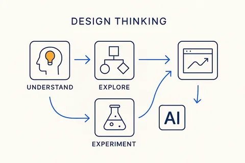
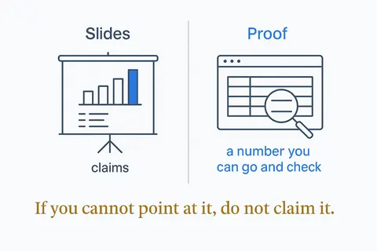
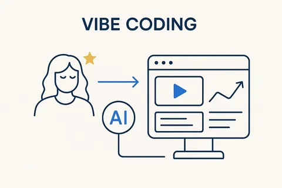
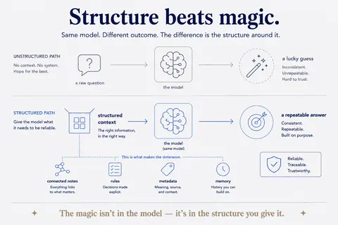
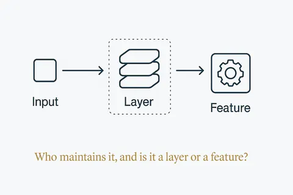
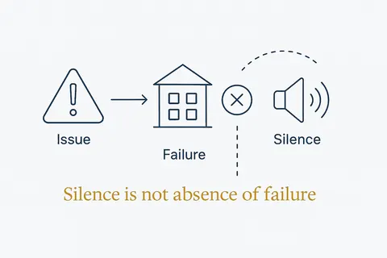
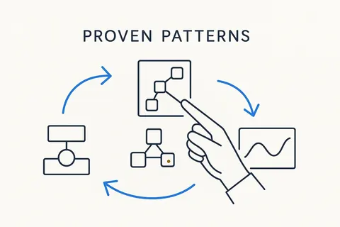
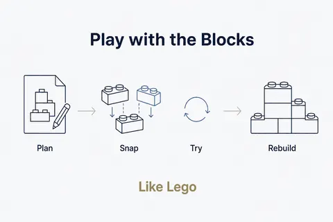
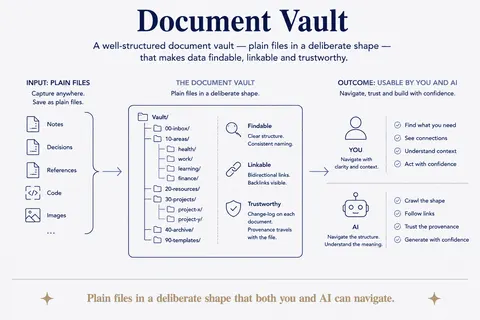

Concepts
The ideas behind it
63 concepts from the Structure Beats Magic and Breakthrough Modeling libraries that matter most when you build your own tools, in 9 categories. Each concept opens its full page in its own library.

Design thinking and small experiments7 conceptsStart with the real need, try the smallest thing that could work, read the result honestly, and only then build more.Open →
From proof of concept to something you rely on5 conceptsA demo convinces; an instrument has to keep working. What changes between the first version that runs and the version a business can depend on.Open →
Vibe coding practices that hold12 conceptsLetting AI write the code is fast. These practices keep the speed and drop the hangover: specs, rules, dry runs, checks the AI cannot mark itself.Open →
Data, rules and structure first8 conceptsMost AI tools fail on the data, not on the AI. Clean data, written rules and one place for every fact are what make a tool work.Open →
Build, buy or rent5 conceptsWhen to keep the package, when to copy the function, and which layer you should own yourself.Open →
Privacy and control7 conceptsWhat may leave the building, what must be checked, and how to notice that something stopped working.Open →
Building your own data models7 conceptsStart from a proven industry model instead of a blank page: take the pattern, keep the fraction you need, add your own rules, and generate the database from it.Open →
Components and building blocks5 conceptsReusable screens, lists, filters and cockpits, so a new app is configuration plus one small piece of code, not a new project.Open →
The business OS7 conceptsThe components every small company runs on — accounting, email, CRM, documents, assets — and how to own them.Open →